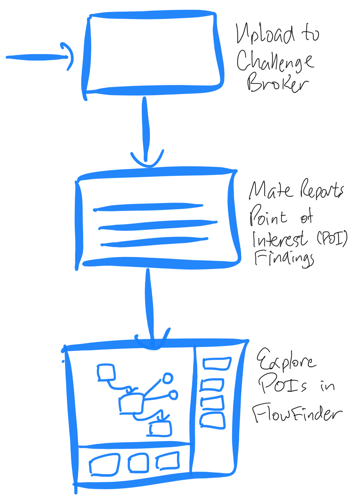

MATE User Workflow¶
{kind=link}
Analyze a Challenge¶
MATE supports C/C++ challenges that include source code. To analyze a challenge, start by uploading it to the Challenge Broker.
Access the Challenge Broker at http://YOUR_CHESS_SYSTEM:5001/
{kind=link}
{kind=link}
Step 2: Use the “Add Target” tab to upload a target¶
Select the challenge name you entered in the previous step
Upload the
.zipcontaining the challengeCheck the source assisted box
Click “Add Target”
Important
You must check the “source assisted” box on the Add Target step in order for MATE and other source-assisted tools to see the challenge.
{kind=link}
Step 3: Confirm your uploaded target is listed on the Target Build Status tab of the Challenge Broker, with status: “Completed.”¶
See the Challenge Broker documentation for more detail about using (and troubleshooting) the challenge broker.
Once this point is reached, MATE will begin its analysis of this target automatically.
Monitor Analysis Progress¶
Visit the MATE dashboard at http://YOUR_CHESS_SYSTEM:8050/build to list the builds MATE has received from the Challenge Broker.

The “Builds” tab lists builds that are in progress or have completed
Refresh until the status of the build has changed from “building” or “inserting” to “built”
Caution
If the build fails for some reason, this may indicate the challenge metadata may need to be updated in order for the challenge to build correctly, or other issues. See Debugging Challenge Build Failures for troubleshooting tips.
Explore MATE POI Findings¶
MATE identifies potential vulnerabilities and reports Points of Interest (POIs), as described in Vulnerability Types.
Click “view POIs” from the MATE dashboard to see as list of POIs.
{kind=link}
Important
The list of POIs starts empty. Results are added one-by-one as the MATE analyses running in the background report findings. Refresh the POIs page periodically to see the most up-to-date set of results.
For each POI result, there is:
“Analysis Name”: the type of analysis, see Vulnerability Types for details
“Insight”: brief summary of the finding itself
“Code Graph”: click the “analyze” link to visualize this finding in Flowfinder, see Using Flowfinder for details
{kind=link}
Please see Vulnerability Types for background material about the types of POIs MATE reports, and the Using Flowfinder section for details about how to use Flowfinder to explore these findings.